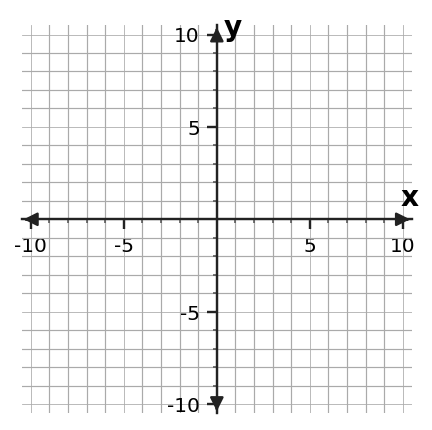
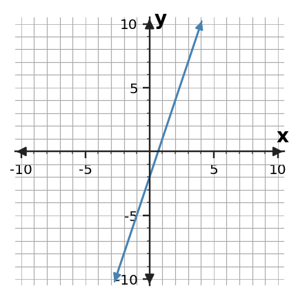

The same relationship can tell its story in more than one way.
Section Introduction
One pattern, several views
A relationship connects two quantities. A table lists matching values, a graph places those values as points, an equation or rule tells how the quantities are connected, and a context explains what the quantities mean.
The important question is not whether two representations look alike. It is whether they produce the same matching values and preserve the same pattern. This section focuses on checking those connections carefully.
Look for what stays the same when the representation changes.
Vocabulary / Key Notation Preview
input · output · ordered pair · representation · rate
Sort the vocabulary. Write each vocabulary word in the column that best matches what you know right now. You may move a word later.
| Know for sure | Recognize | Don't know yet |
|---|---|---|
Section Preview
Skim before close reading. Look at the headings, tables, graphs, and examples. Find 1–2 things you notice and 1–2 things you wonder about.
| What I noticed | |
|---|---|
| What I wonder |
Close Reading Directions
READ IN SHORT CHUNKS. Annotate the words and visuals together. Underline evidence, circle or highlight bold vocabulary, label arrows or important features, connect sentences to tables and graphs, and jot short questions or connections in the margins. Use these directions through the What's To Come section and the reading that follows.
What's To Come
PREVIEW / DECOMPOSE. Use the connected parts to see where this section is headed. Annotate the representations and prompts as you work.
A bike-share station charges a $3 start fee plus $2 for each hour of use. Let h be hours and C be total cost. Use this one situation for Parts A–D.
Part A
Complete a table for \(h=0,1,2,3\).
| h | C |
|---|---|
| 0 | |
| 1 | |
| 2 | |
| 3 |
Part B
Write a rule that gives \(C\) from \(h\).
Part C
Plot the matching values on the coordinate plane and connect the pattern when appropriate.

Part D
Explain one piece of evidence that the table, rule, and graph describe the same relationship.
Answer: A: costs 3, 5, 7, 9. B: \(C=2h+3\). C: points \((0,3),(1,5),(2,7),(3,9)\) on the same line. D: valid evidence may cite matching values or the constant increase of 2 per hour.
Reasoning: The $3 fee is the value when h=0; each additional hour adds $2. Every representation must preserve both facts.
Teaching move / likely issue: If students write 3h+2, ask which number changes with hours and which is present before any hours pass.
I Can 1Find matching values across different representations.
A representation shows a relationship in a particular form. To find matching values, first identify which quantity is the input and which is the output. In an ordered pair \((x,y)\), the first coordinate matches the input and the second matches the output.
Do not match values only because they are near each other on the page. Trace one input through each representation. For example, if the rule is \(y=2x+1\), then input \(x=3\) must match output \(y=7\) everywhere the same relationship appears.
Equation / Rule
\(y=2x+1\)
For \(x=2\), \(y=5\).
Table
| x | y |
|---|---|
| 0 | 1 |
| 1 | 3 |
| 2 | 5 |
| 3 | 7 |
Graph

Context / Situation
A game starts with 1 point and adds 2 points each round.
One input should land on the same output in every view.
Example 1: Match a value
The rule is \(y=3x-1\). Which row in the table matches input \(x=2\)? Explain how you know.
| x | y |
|---|---|
| 0 | -1 |
| 1 | 2 |
| 2 | 5 |
| 3 | 8 |
Answer: The row \((2,5)\).
Reasoning: Substitute x=2: \(3(2)-1=5\).
Teaching move / likely issue: Watch for students choosing the second row instead of the row whose input is 2.
You Try It 1: Trace a new input
The rule is \(y=2x+5\). Find the table row that matches input \(x=-1\), then write the matching ordered pair.
| x | y |
|---|---|
| -2 | 1 |
| -1 | 3 |
| 0 | 5 |
| 1 | 7 |
Answer: The row is x=-1, y=3; ordered pair \((-1,3)\).
Reasoning: \(2(-1)+5=3\), so the table and rule agree.
Teaching move / likely issue: Check whether the negative sign is carried into substitution.
Stop and Discuss
- How can one input help you test whether two representations match?
- What information does the order of an ordered pair preserve?
I Can 2Create a table or graph from another representation.
Creating a new representation means keeping the relationship while changing the form. From a rule, you can choose inputs, calculate outputs, and build a table. From a table, you can plot each row as an ordered pair to create a graph.
When you graph, the scale matters. The point \((4,6)\) is only correct if the axes are labeled and counted accurately. After plotting several points, look for the same pattern you saw in the source representation.
| x | y |
|---|---|
| -1 | 1 |
| 0 | 2 |
| 1 | 3 |
| 2 | 4 |
Each table row becomes one point: \(x\) first, then \(y\).
Example 2: Build a table and graph
Use \(y=x+2\). Create a table for \(x=-2,0,2,4\), then plot the points.
| x | y |
|---|---|
| -2 | |
| 0 | |
| 2 | |
| 4 |
Answer: Outputs are 0, 2, 4, 6; plot \((-2,0),(0,2),(2,4),(4,6)\).
Reasoning: Evaluate the rule for each input; each row becomes a graph point.
Teaching move / likely issue: Have students point to the x-value on the horizontal axis before moving vertically.
You Try It 2: Translate another rule
Use \(y=-x+1\). Create a table for \(x=-3,-1,1,3\), then plot the points.
| x | y |
|---|---|
| -3 | |
| -1 | |
| 1 | |
| 3 |
Answer: Outputs are 4, 2, 0, -2; plot \((-3,4),(-1,2),(1,0),(3,-2)\).
Reasoning: The negative sign reverses the direction of change: increasing x by 2 decreases y by 2.
Teaching move / likely issue: Check that students do not treat -x as always negative.
Stop and Discuss
- What must stay unchanged when you turn a rule into a table?
- How can the graph help you notice a table-entry error?
I Can 3Check whether two representations describe the same relationship.
To check whether two representations describe the same relationship, test corresponding values instead of relying on shape or appearance. Pick useful inputs—often 0 and one or two other values—and compare the outputs.
One mismatch is enough to show two representations are different. Several matches give stronger evidence, especially when the rate or pattern also agrees. On a graph, read the scale before extracting a point.
Table
| x | y |
|---|---|
| 0 | -2 |
| 1 | 1 |
| 2 | 4 |
Rule
\(y=3x-2\)

At x=0, 1, and 2, the table and rule produce -2, 1, and 4.
Example 3: Same relationship or not?
Does the table describe \(y=4x+1\)? Use at least two rows as evidence.
| x | y |
|---|---|
| 0 | 1 |
| 1 | 5 |
| 2 | 9 |
| 3 | 13 |
Answer: Yes.
Reasoning: For example, x=1 gives 5 and x=3 gives 13 in both the table and rule.
Teaching move / likely issue: Require value evidence rather than “the pattern looks right.”
You Try It 3: Find the mismatch
Does the table describe \(y=2x-3\)? Identify the first row that supports or disproves the match and explain.
| x | y |
|---|---|
| 0 | -3 |
| 1 | -1 |
| 2 | 2 |
| 3 | 3 |
Answer: No; the row x=2, y=2 disproves it.
Reasoning: The rule gives \(2(2)-3=1\), not 2.
Teaching move / likely issue: Students may stop after two matching rows; emphasize that one later mismatch disproves equivalence.
Stop and Discuss
- Why is one mismatch enough to reject a match?
- Which inputs are often efficient to test first, and why?
I Can 4Use values, rate, or pattern as evidence.
Good evidence names a mathematical feature that survives a change in representation. Useful evidence includes matching values, a common rate of change, or the same repeating or growing pattern.
A claim such as “these are the same” is stronger when it points to specific numbers. For a linear relationship, a constant rate can connect a table, graph, equation, and situation. For other relationships, the pattern may change in a different way, so choose evidence that fits what you see.
Value evidence
At \(x=4\), both views give \(y=11\).
Rate evidence
Whenever \(x\) increases by 1, \(y\) increases by 2.
| x | y |
|---|---|
| 1 | 5 |
| 2 | 7 |
| 3 | 9 |
| 4 | 11 |
Name the feature and point to the numbers that show it.
Example 4: Use rate as evidence
Two tables are shown. Do they have the same rate of change? Use the values to justify your answer.
| x | Table A y | Table B y |
|---|---|---|
| 0 | 4 | 1 |
| 1 | 7 | 4 |
| 2 | 10 | 7 |
| 3 | 13 | 10 |
Answer: Yes; both rates are 3 units of y for each 1 unit of x.
Reasoning: Successive y-values increase by 3 in both columns, even though the starting values differ.
Teaching move / likely issue: Distinguish “same rate” from “same relationship”; these do not have the same starting value.
You Try It 4: Use pattern as evidence
Table C and the rule \(y=5-2x\) are intended to show the same relationship. Use a value and the rate/pattern to decide whether that claim is supported.
| x | Table C y |
|---|---|
| 0 | 5 |
| 1 | 3 |
| 2 | 1 |
| 3 | -1 |
Answer: Yes.
Reasoning: The rule gives y=5 at x=0, and the output decreases by 2 whenever x increases by 1; the table does the same.
Teaching move / likely issue: Ask students to separate starting value evidence from rate evidence.
Stop and Discuss
- What is the difference between “same rate” and “same relationship”?
- When would matching values be stronger evidence than visual similarity?
Vocabulary Reference
| Term | Meaning in this section |
|---|---|
| input | The value put into a relationship or rule. |
| output | The value produced for a given input. |
| ordered pair | A pair written \((x,y)\) that records a matching input and output. |
| representation | A way to show a relationship, such as a rule, table, graph, or situation. |
| rate | How much one quantity changes compared with a change in another quantity. |
Section Summary
- A relationship can be shown with a rule, table, graph, or context.
- Matching inputs must produce matching outputs across equivalent representations.
- A table row becomes an ordered pair when graphed.
- Values, rate, and pattern are stronger evidence than appearance alone.
What I Understand Now
Choose one representation that feels easiest for you to read and one that takes more effort. Explain what information you look for first in each one and how you can use another representation to check your thinking.
Common Mistakes to Watch
| Mistake | What to remember |
|---|---|
| Matching by appearance | Test actual input-output values. |
| Ignoring graph scale | Read the axis labels and tick spacing before reading coordinates. |
| Reversing an ordered pair | Write input/x first and output/y second. |
| Calling equal rates the same relationship | Also check a matching value such as the starting value. |